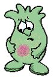

Инфекции кожи

Интересные факты:
Лучшим способом профилактики инфекций кожи является частое мытьё рук тёплой водой с мылом, причём совершенно не обязательно использовать для этих целей антибактериальное мыло.
Что делать:
- Промойте порезы, ссадины и раны водой с мылом, в последующем сохраняйте их чистыми и сухими, закрывайте стерильной сухой повязкой вплоть до заживления.
- Пользуйтесь индивидуальными предметами личной гигиены, такими как мыло, полотенца и бритвы.
- Стирайте спортивную одежду и мойте спортивный инвентарь каждый раз после использования.
Обратитесь к врачу:
- При появлении признаков (симптомов) инфекции, таких как боль, покраснение, отёк, повышение температуры кожи в зоне травмы, выделение гноя или крови.
- При появлении новых симптомов в процессе или после лечения.
Инфекции кожи возникают, когда бактерии попадают в порез или ссадину.
Бактерии, в том числе стафилококки, живут на коже каждого человека. Обычно они безвредны, однако при попадании стафилококков в организм через повреждённые участки кожи могут возникать так называемые стафилококковые инфекции. Инфекция распространяется от человека к человеку при прямом контакте, когда соприкасаются кожные покровы, и при совместном использовании таких предметов, как постельное бельё, полотенца, одежда и спортивный инвентарь.
Лечить стафилококковые инфекции становится всё трудней.
Пенициллин перестал действовать на стафиллококки уже более 50 лет назад — тогда появились штаммы, устойчивые к пенициллину (т.н. PRSA — пенициллиноустойчивые штаммы золотистого стафилококка или penicillin-resistant Staphylococcus aureus). Так, в настоящее время подавляющее большинство всех штаммов золотистых стафилококков устойчивы к пенициллину. Со временем ряд других антибиотиков перестали действовать на стафилококки - данный микроорганизм стал резистентным (устойчивым) к ним. Такие бактерии называют MRSA (метициллинорезистентные золотистые стафилококки - methicillin-resistant Staphylococcus aureus), и они резистентны ко всем антибиотикам группы пенициллина, а так же целом ряду антибактериальных препаратов других групп. Инфекции кожи, вызванные MRSA, могут перейти в более тяжёлые, и даже угрожающие жизни инфекции сердца, крови и костной ткани.
Наиболее часто инфекции кожи, вызванные MRSA, возникают в лечебных учреждениях, где находятся послеоперационные больные, ожоговых отделениях и в отделениях реанимации и интенсивной терапии. Тем не менее, в последние годы эти инфекции все чаще возникают независимо от возраста и даже вне стационара. Однако подобные «внебольничные» случаи MRSA-инфекции легче поддаются лечению антибиотиками, чем инфекции, вызванные MRSA и возникшие в стационаре.
Наиболее часто стафилококки вызывают следующие поражения кожи:
- Фурункул — болезненный, красный узел, который увеличивается и приобретает белого цвета головку. Фурункулы возникают на сальных или влажных участках кожи, таких как шея, подмышки, пах и ягодицы. Они могут вскрываться с выделением гноя или крови.
- Импетиго — пузыри, содержащие жидкость, которые быстро вскрываются и покрываются желтыми корками. У детей они часто возникают на лице и могут распространяться при расчесывании.
- Инфекция корней волос (фолликулит) — маленькие узелки под кожей в основании волосяного фолликула, которые могут вызывать зуд.
При возникновении инфекций кожи следует обратиться к врачу, чтобы предотвратить их распространение, развитие осложнений и с целью назначения адекватного лечения.
Эффективны ли антибиотики при инфекциях кожи?
Да, поскольку они вызываются бактериями. Как правило, инфекции кожи требуют местного (если инфекционный процесс носит локализованный характер) или системного (внутрь или инъекционного) применения антибиотиков. В некоторых случаях антибиотики назначаются и системно, и местно (в виде мазей).
Применение антибиотиков должно осуществляться ТОЛЬКО по назначению врача, поскольку приём данных препаратов без необходимости приводит к появлению устойчивых к действию антибиотиков бактерий, таких как MRSA. Если антибиотик назначен, обязательно следует пройти полный курс лечения - это предотвратит развитие устойчивости у микроорганизмов и полностью вылечит пациента, предупреждая возникновение рецидивов (повторных обострений) заболевания.
Лучшая профилактика инфекции кожи — соблюдение правил личной гигиены.